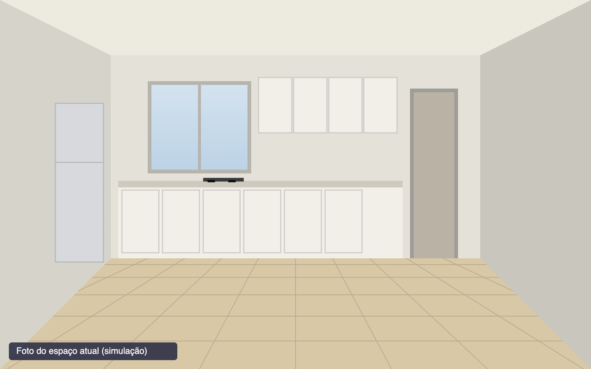
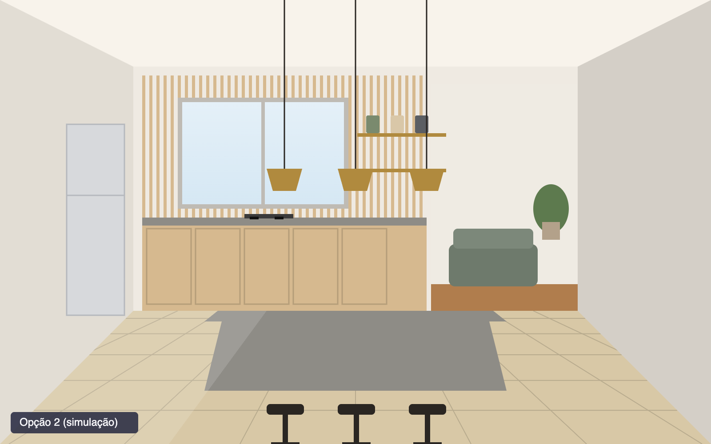
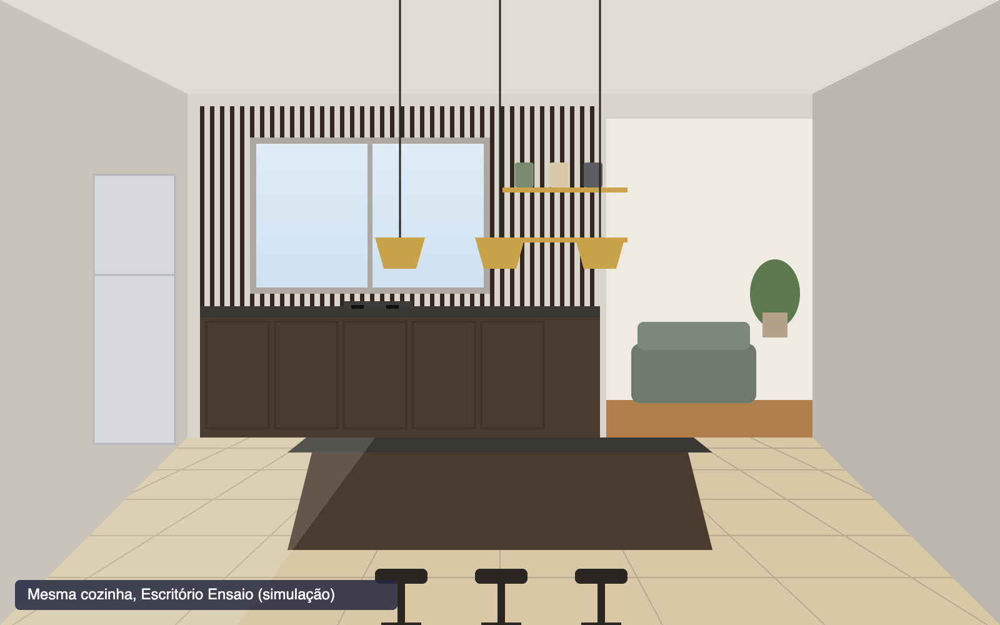
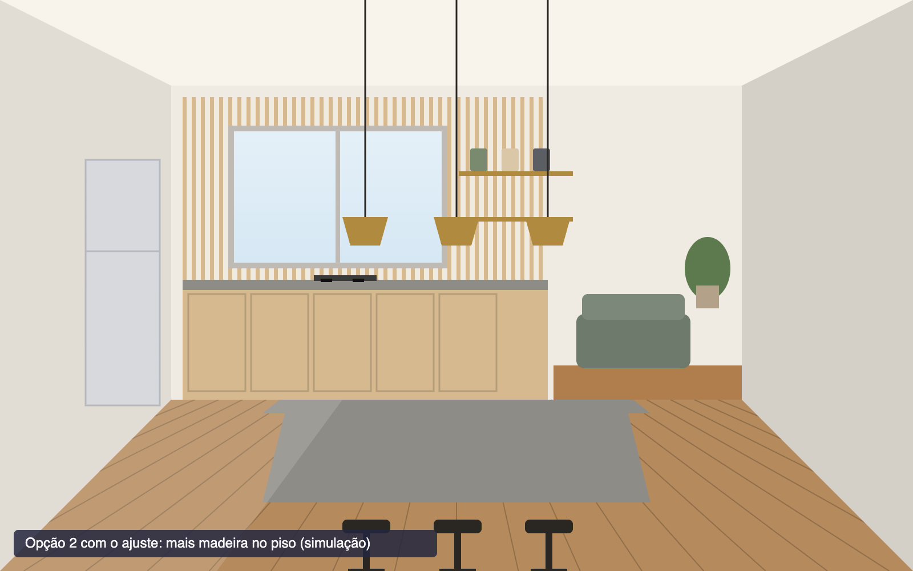

Conte o que você quer para a sua cozinha.
Uma conversa com a agente da Archa, pela web ou pelo WhatsApp. Fotos, planta, medidas e desejos entram por aqui.

espaco.jpgfoto da cozinhaPrograma de necessidades
montado pela agente- Ambiente
- Cozinha integrada à sala, apartamento em Pinheiros
- Usos
- Cozinhar quase todo dia e receber amigos nos fins de semana
- Desejos
- Abrir para a sala, bancada grande para sentar, mais luz natural
- Materiais
- Madeira e materiais que envelhecem bem. Sem brilho, sem cozinha toda branca
- Manter
- Janela no lugar e piso de taco da sala
- Reaproveitar
- Geladeira e fogão
- Anexos
- Foto da cozinha, planta e medidas
Conteúdo de exemplo, a partir de um briefing fictício. Nenhum valor numérico vem do modelo.
Qual projeto fala mais com você?
Compare dois projetos por vez. A cada escolha, a Archa aproxima os escritórios do acervo que licenciaram seu estilo. Ou navegue pelos portfólios.
Toque no projeto que você prefere
Seu estilo se aproxima do Escritório Exemplo.
O que a Archa aprendeu do acervo do Escritório Exemplo
Assinatura extraída do acervo pela camada determinística da Archa, sem modelo de imagem. É ela que guia cada apresentação. Texto de exemplo.
Escritório Exemplo
Escritório fictício, com acervo simulado
Carvalho claro, pedra cinza, latão e luz lateral. Projetos residenciais com cozinhas abertas para a sala.
O acervo do Escritório Exemplo.
Os projetos que o escritório licenciou para a Archa gerar apresentações no estilo dele. É daqui que sai a assinatura de cada opção.
Escritório Exemplo
Autor e licenciante do acervo
- Assinatura
- Carvalho claro, pedra cinza, latão e plantas; luz lateral; composição frontal com a parede do fundo como protagonista
- Licença
- Uso do acervo pela Archa para gerar apresentações no estilo do escritório. O autor assina cada uma e recebe parte do valor.
- Aprovação
- Selo instantâneo: o escritório autorizou a Archa a aprovar na hora
- Próximos passos
- Executivo, RRT e obra, direto com o escritório. Honorários sob consulta, por escolha dele (a alternativa é a estimativa da Archa).
- Canal próprio
- Esta página é a entrada do escritório. Quem chega por ela gera apresentações só com os projetos dele.
Acervo simulado: escritório fictício e peças desenhadas para o protótipo. Nenhuma vem de escritório real nem de modelo de imagem.
Escolha a apresentação.
Você paga por apresentação, uma por escritório, com o estilo de cada um aplicado à sua cozinha. Parte do valor vai para o autor.
Quantos escritórios?
Uma apresentação por escritório, cada uma pelo valor do formato. O primeiro veio dos seus duelos.
Resumo
- Ambiente
- Cozinha integrada, Pinheiros
- Formato
- Completa, R$ 1.000 por escritório
- Escritórios
- Exemplo e Ensaio
Pagamento simulado. Nenhum dado é enviado.
Pagamento confirmado. Gerando as apresentações da sua cozinha.
- Lendo o programa de necessidades
- Lendo a assinatura de cada escritório no acervo
- Aplicando cada estilo à foto da sua cozinha
- Gerando o vídeo
Sua cozinha, no estilo do Escritório Exemplo.
Três opções geradas sobre a foto do seu espaço, com a janela, a geladeira e o fogão no lugar. Cada uma assinada pelo autor.


Ripado e prateleiras
Autor: Escritório Exemplo
Dois escritórios. O que muda é a identidade.
A Archa aprende a assinatura de cada acervo e desenha a sua cozinha com ela, assinada pelo autor. A janela, a geladeira e o fogão ficam onde estão.
- Escritório Exemplo
- Carvalho claro, pedra cinza, latão e plantas, com luz lateral
- Escritório Ensaio
- Preto fosco, latão, madeira escura e ripado escuro
No caminho tradicional, isso são semanas de trabalho de dois ou três escritórios. Aqui, três opções por escritório, em minutos, a partir de R$ 300.
Imagens simuladas. Quando imagens/video.mp4 não existe, o play simula o percurso sobre a imagem.
Ajuste por conversa. O autor aprova.
Peça mudanças em linguagem comum. O escritório confere a apresentação e assina com o selo dele.

ajuste-1.pngimagem ajustadaO ajuste de exemplo foi desenhado sobre a opção 2. Com as saídas reais do pipeline, o ajuste parte da opção escolhida.
Aprovação do autor
Aprovado pelo Escritório Exemplo
Selo de aprovação instantâneaO escritório autorizou a Archa a aprovar na hora apresentações geradas no estilo dele. A assinatura do autor vai junto com a imagem.
Agora, o projeto de verdade.
Com o conceito aprovado, você contrata o Escritório Exemplo para o projeto executivo, a RRT e a obra. A Archa encaminha; o contrato é direto com o escritório.
Escritório Exemplo
Autor do conceito aprovado. Escritório fictício, para o protótipo.
- Honorários dos próximos passos
- Sob consulta, por escolha do escritório. A alternativa seria a estimativa da Archa; você viu essa escolha antes de pagar.
Conversa aberta com o escritório, com o conceito aprovado anexado
O que entra na contratação
- Projeto executivoDetalhamento da marcenaria, elétrica, hidráulica e acabamentos a partir do conceito aprovado.
- RRTRegistro de Responsabilidade Técnica no CAU, em nome do escritório.
- Acompanhamento de obraO escritório acompanha a execução com o conceito como referência.
- Materiais do catálogoOs materiais das imagens existem no catálogo da Archa e podem ser especificados pelo escritório.
Etapas 1 a 5 na plataforma, com IA. Esta etapa é com o escritório, sob responsabilidade técnica e RRT.